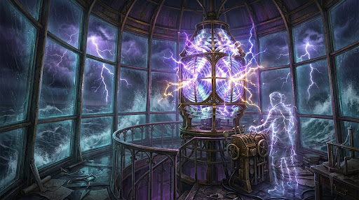

You burst into the lantern room at the very crown of the Glass Lighthouse, where the storm rages in full panoramic fury beyond the curved crystal panes. Lightning forks across the black clouds so closely that the air tastes of copper and ash. In the center of the dome towers the Great Prism, a twelve foot lens of cut diamond glass whose core flame is sputtering in ragged bursts of violet and gold. Standing between you and the control pedestal is a figure wrapped in salt-stiffened oilskins. When he turns, you see that Keeper Vane is no longer wholly human; veins of captive lightning flicker beneath his translucent skin, and his eyes burn like twin St. Elmo's fires. "You came too late to save me, Warden," Vane's voice resonates inside your skull over the roar of the thunder. "The gale demands an anchor. Either you force the prism into alignment with raw power, or you step into the focal circle and bear the storm's weight yourself!"